functions$plot_mean(df_intensive, "log_jobincome")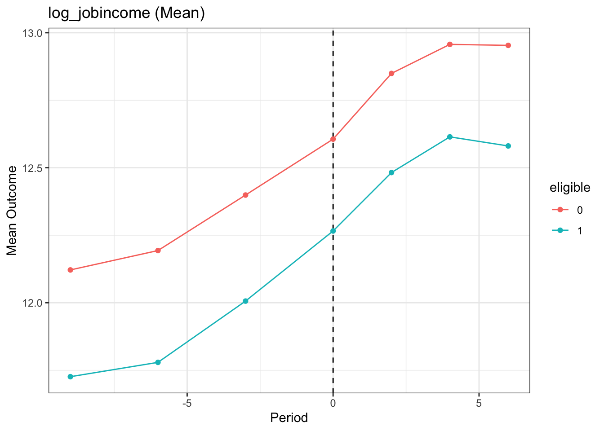
functions$plot_mean(df_intensive, "log_jobincome")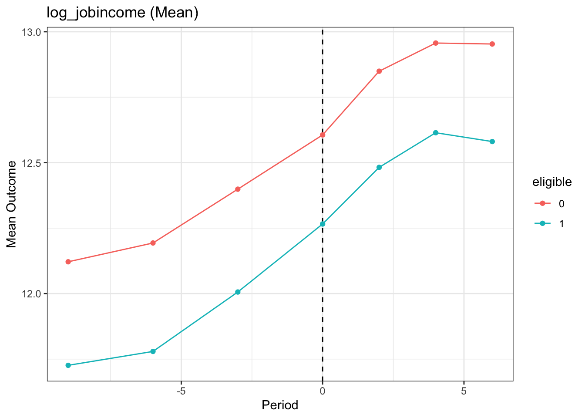
# run_feols(df_intensive, "log_jobincome", F) |>
# iplot()
# run_feols(df_intensive, "log_jobincome", T) |>
# iplot()
m1 <- functions$run_ols(df_intensive, "log_jobincome", F, F)
m2 <- functions$run_ols(df_intensive, "log_jobincome", T, F)
functions$plot_event_study(m1, m2)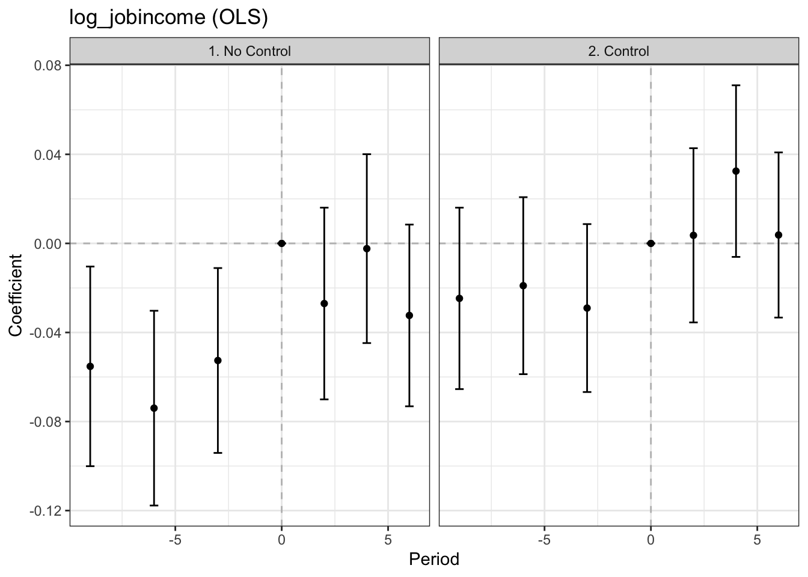
# modelsummary::modelsummary(list(m1, m2), vcov = "HC", coef_omit = "^(?!eligible:period)", gof_omit = "BIC|AIC")# sensitivity_check(m1, relativeMagnitudes = T)
# sensitivity_check(m1, relativeMagnitudes = F)te_log_jobincome <- functions$run_all_regressions("log_jobincome", df_intensive)[1] "DONE - OLS"Warning in pre_process_drdid(yname = yname, tname = tname, idname = idname, :
Some covariates are missing (NA). We are dropping those observations[1] "DONE - Doubly robust DID"Warning in pre_process_drdid(yname = yname, tname = tname, idname = idname, :
Some covariates are missing (NA). We are dropping those observations[1] "DONE - IPW DID"te_log_jobincome# A tibble: 4 × 5
term estimate std.error statistic p.value
<chr> <dbl> <dbl> <dbl> <dbl>
1 Pooled OLS 0.00632 0.0121 0.525 0.600
2 Pooled OLS with Controls 0.0150 0.0111 1.36 0.174
3 DR DID 0.0137 0.0127 1.08 0.281
4 IPW DID 0.0269 0.0158 1.70 0.0891cs_jobincome <- functions$run_cs(
data = df_intensive,
outcome = "log_jobincome",
xfm = "~ schooling + civilstatus + urb",
est_method = "dr"
)Warning in pre_process_did(yname = yname, tname = tname, idname = idname, :
dropped 5 rows from original data due to missing datasummary(cs_jobincome)
Call:
did::att_gt(yname = outcome, tname = "year", gname = "gname",
xformla = stats::as.formula(xfm), data = data, panel = FALSE,
est_method = est_method, base_period = "universal")
Reference: Callaway, Brantly and Pedro H.C. Sant'Anna. "Difference-in-Differences with Multiple Time Periods." Journal of Econometrics, Vol. 225, No. 2, pp. 200-230, 2021. <https://doi.org/10.1016/j.jeconom.2020.12.001>, <https://arxiv.org/abs/1803.09015>
Group-Time Average Treatment Effects:
Group Time ATT(g,t) Std. Error [95% Simult. Conf. Band]
2010 2000 0.0047 0.0267 -0.0656 0.0751
2010 2003 -0.0157 0.0232 -0.0769 0.0455
2010 2006 -0.0176 0.0223 -0.0763 0.0412
2010 2009 0.0000 NA NA NA
2010 2011 0.0105 0.0241 -0.0531 0.0741
2010 2013 0.0199 0.0240 -0.0433 0.0830
2010 2015 0.0025 0.0231 -0.0583 0.0632
---
Signif. codes: `*' confidence band does not cover 0
P-value for pre-test of parallel trends assumption: 0.74718
Control Group: Never Treated, Anticipation Periods: 0
Estimation Method: Doubly Robustaggte(cs_jobincome, type = "dynamic") |>
ggdid() +
ggtitle("Log of job income (Callaway and Sant'Anna, 2021)") +
theme_bw()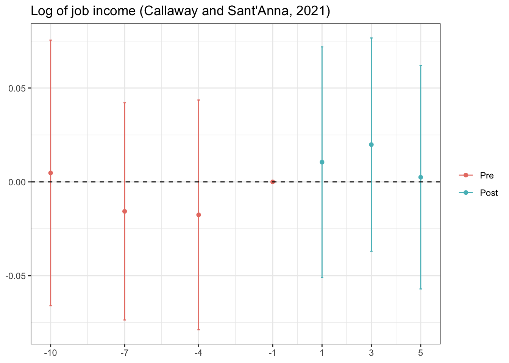
functions$plot_mean(df_intensive, "log_totalincome")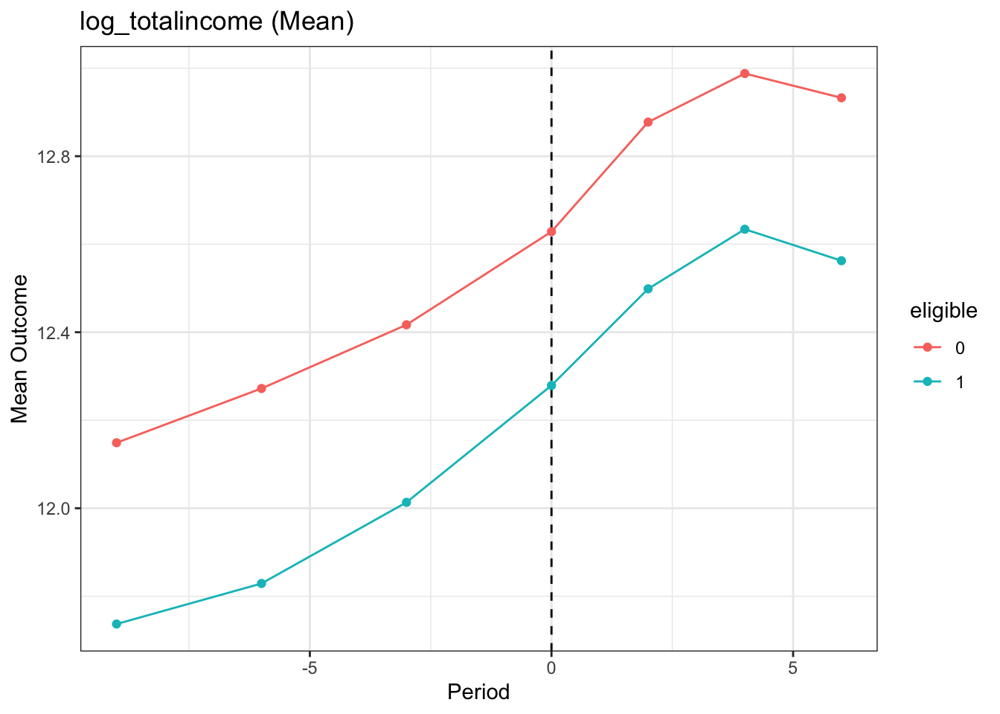
m1 <- functions$run_ols(df_intensive, "log_totalincome", F, F)
m2 <- functions$run_ols(df_intensive, "log_totalincome", T, F)
functions$plot_event_study(m1, m2)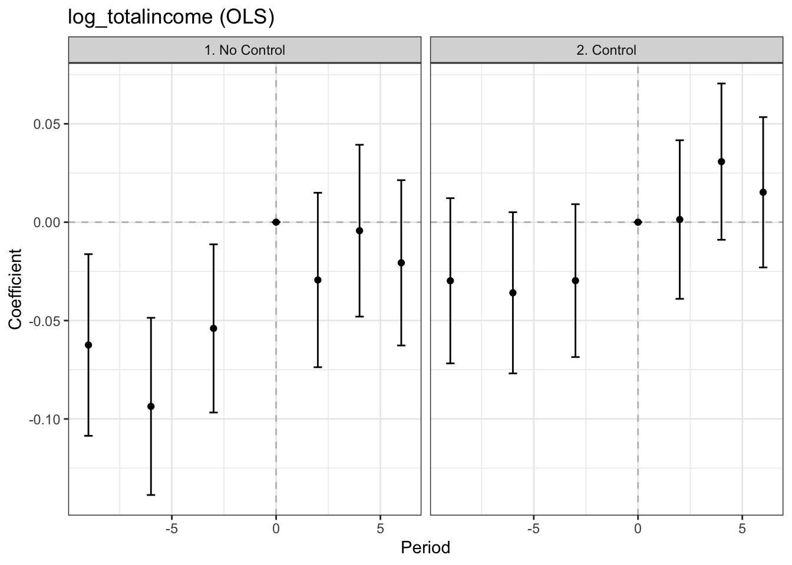
# sensitivity_check(m1, relativeMagnitudes = T)
# sensitivity_check(m1, relativeMagnitudes = F)te_log_totalincome <- functions$run_all_regressions("log_totalincome", df_intensive)[1] "DONE - OLS"Warning in pre_process_drdid(yname = yname, tname = tname, idname = idname, :
Some covariates are missing (NA). We are dropping those observations[1] "DONE - Doubly robust DID"Warning in pre_process_drdid(yname = yname, tname = tname, idname = idname, :
Some covariates are missing (NA). We are dropping those observations[1] "DONE - IPW DID"te_log_totalincome# A tibble: 4 × 5
term estimate std.error statistic p.value
<chr> <dbl> <dbl> <dbl> <dbl>
1 Pooled OLS 0.0177 0.0124 1.43 0.152
2 Pooled OLS with Controls 0.0250 0.0114 2.20 0.0277
3 DR DID 0.0190 0.0131 1.45 0.147
4 IPW DID 0.0346 0.0142 2.45 0.0144functions$plot_mean(df_intensive |>
filter(hours > 0 & hours <= 80), "log_hours")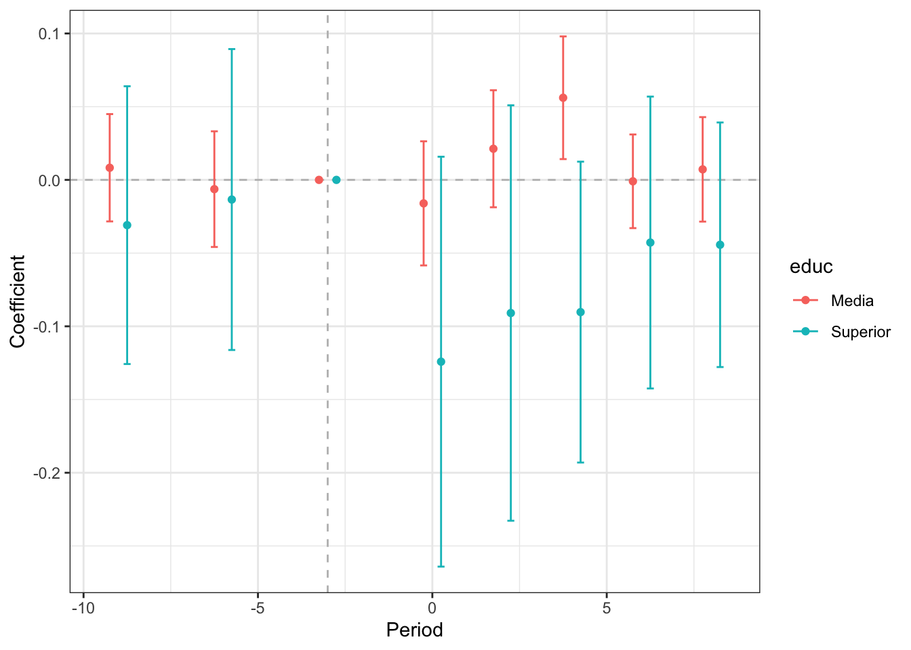
# FE-OLS
# run_feols(
# df_intensive |>
# filter(hours > 0 & hours <= 80),
# "log(hours)", F) |>
# iplot()
# run_feols(
# df_intensive |>
# filter(hours > 0 & hours <= 80),
# "log(hours)", T) |>
# iplot()
# OLS
m1 <- functions$run_ols(df_intensive |> filter(hours > 0 & hours <= 80), "log_hours", F)
m2 <- functions$run_ols(df_intensive |> filter(hours > 0 & hours <= 80), "log_hours", T)
functions$plot_event_study(m1, m2)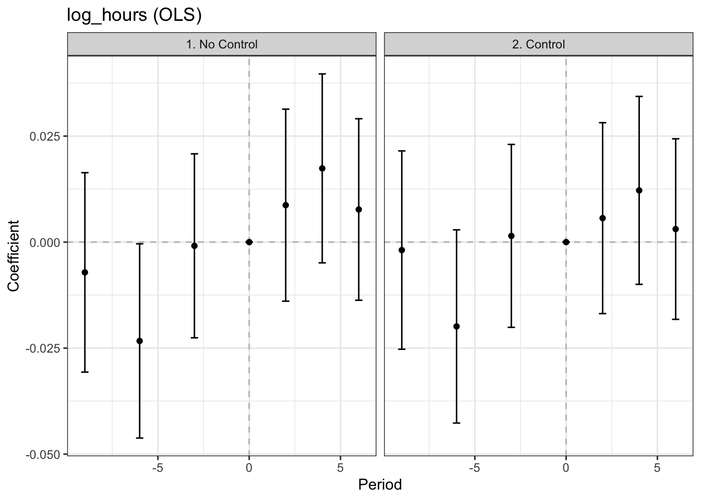
# sensitivity_check(m1, relativeMagnitudes = T)
# sensitivity_check(m1, relativeMagnitudes = F)te_log_hours <- functions$run_all_regressions(
"log_hours",
df_intensive |> filter(hours > 0 & hours <= 80)
)[1] "DONE - OLS"Warning in pre_process_drdid(yname = yname, tname = tname, idname = idname, :
Some covariates are missing (NA). We are dropping those observations[1] "DONE - Doubly robust DID"Warning in pre_process_drdid(yname = yname, tname = tname, idname = idname, :
Some covariates are missing (NA). We are dropping those observations[1] "DONE - IPW DID"te_log_hours# A tibble: 4 × 5
term estimate std.error statistic p.value
<chr> <dbl> <dbl> <dbl> <dbl>
1 Pooled OLS 0.0210 0.00620 3.38 0.000718
2 Pooled OLS with Controls 0.0132 0.00618 2.13 0.0328
3 DR DID 0.0111 0.00723 1.54 0.124
4 IPW DID 0.00837 0.00667 1.26 0.209 cs_workinghours <- functions$run_cs(
df_intensive |>
filter(hours > 0 & hours <= 80),
"log_hours",
xfm = "~ schooling + civilstatus + urb",
est_method = "dr"
)Warning in pre_process_did(yname = yname, tname = tname, idname = idname, :
dropped 5 rows from original data due to missing datasummary(cs_workinghours)
Call:
did::att_gt(yname = outcome, tname = "year", gname = "gname",
xformla = stats::as.formula(xfm), data = data, panel = FALSE,
est_method = est_method, base_period = "universal")
Reference: Callaway, Brantly and Pedro H.C. Sant'Anna. "Difference-in-Differences with Multiple Time Periods." Journal of Econometrics, Vol. 225, No. 2, pp. 200-230, 2021. <https://doi.org/10.1016/j.jeconom.2020.12.001>, <https://arxiv.org/abs/1803.09015>
Group-Time Average Treatment Effects:
Group Time ATT(g,t) Std. Error [95% Simult. Conf. Band]
2010 2000 -0.0040 0.0136 -0.0390 0.0309
2010 2003 -0.0284 0.0150 -0.0670 0.0102
2010 2006 -0.0020 0.0119 -0.0327 0.0288
2010 2009 0.0000 NA NA NA
2010 2011 0.0035 0.0143 -0.0332 0.0403
2010 2013 0.0088 0.0130 -0.0247 0.0423
2010 2015 0.0034 0.0122 -0.0282 0.0349
---
Signif. codes: `*' confidence band does not cover 0
P-value for pre-test of parallel trends assumption: 0.1816
Control Group: Never Treated, Anticipation Periods: 0
Estimation Method: Doubly Robust# aggte(cs_workinghours, type = "simple")
aggte(cs_workinghours, type = "dynamic") |>
ggdid() +
ggtitle("Log of working hours (Callaway and Sant'Anna, 2021)") +
theme_bw()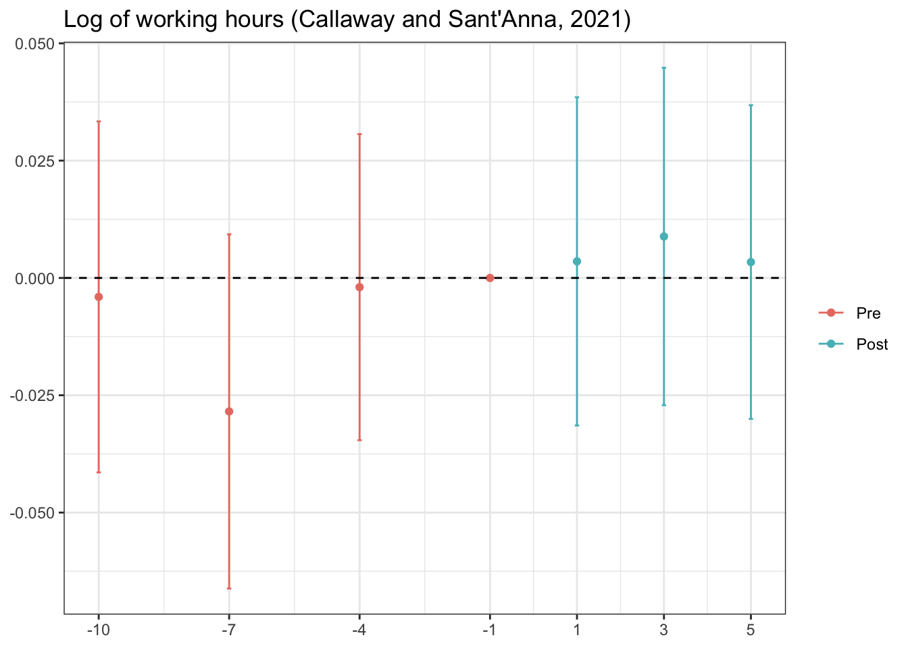
functions$plot_mean(df_extensive, "lfp")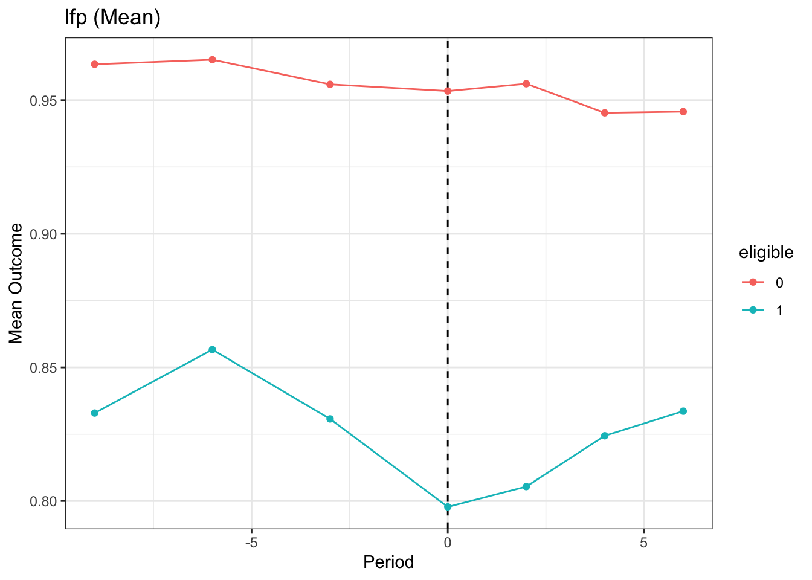
# run_feols(df_extensive, "lfp", F) |>
# iplot()
# run_feols(df_extensive, "lfp", T) |>
# iplot()
m1 <- functions$run_ols(df_extensive, "lfp", F)
m2 <- functions$run_ols(df_extensive, "lfp", T)
functions$plot_event_study(m1, m2)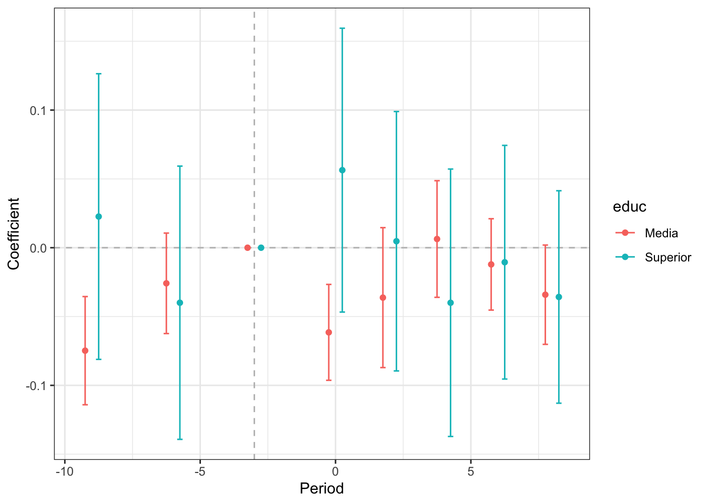
# sensitivity_check(m1, relativeMagnitudes = T) |> print()
# sensitivity_check(m1, relativeMagnitudes = F) |> print()te_lfp <- functions$run_all_regressions("lfp", df_extensive)[1] "DONE - OLS"Warning in pre_process_drdid(yname = yname, tname = tname, idname = idname, :
Some covariates are missing (NA). We are dropping those observations[1] "DONE - Doubly robust DID"Warning in pre_process_drdid(yname = yname, tname = tname, idname = idname, :
Some covariates are missing (NA). We are dropping those observations[1] "DONE - IPW DID"te_lfp# A tibble: 4 × 5
term estimate std.error statistic p.value
<chr> <dbl> <dbl> <dbl> <dbl>
1 Pooled OLS 0.00495 0.00472 1.05 0.295
2 Pooled OLS with Controls -0.00431 0.00467 -0.924 0.356
3 DR DID 0.000974 0.00528 0.185 0.854
4 IPW DID 0.00602 0.00555 1.09 0.278cs_lfp <- functions$run_cs(
df_extensive,
"lfp",
xfm = "~ schooling + civilstatus + urb",
est_method = "dr"
)Warning in pre_process_did(yname = yname, tname = tname, idname = idname, :
dropped 7 rows from original data due to missing datasummary(cs_lfp)
Call:
did::att_gt(yname = outcome, tname = "year", gname = "gname",
xformla = stats::as.formula(xfm), data = data, panel = FALSE,
est_method = est_method, base_period = "universal")
Reference: Callaway, Brantly and Pedro H.C. Sant'Anna. "Difference-in-Differences with Multiple Time Periods." Journal of Econometrics, Vol. 225, No. 2, pp. 200-230, 2021. <https://doi.org/10.1016/j.jeconom.2020.12.001>, <https://arxiv.org/abs/1803.09015>
Group-Time Average Treatment Effects:
Group Time ATT(g,t) Std. Error [95% Simult. Conf. Band]
2010 2000 0.0255 0.0098 0.0002 0.0509 *
2010 2003 0.0485 0.0090 0.0251 0.0718 *
2010 2006 0.0295 0.0094 0.0052 0.0539 *
2010 2009 0.0000 NA NA NA
2010 2011 0.0030 0.0100 -0.0229 0.0288
2010 2013 0.0375 0.0096 0.0126 0.0624 *
2010 2015 0.0364 0.0089 0.0134 0.0593 *
---
Signif. codes: `*' confidence band does not cover 0
P-value for pre-test of parallel trends assumption: 1e-05
Control Group: Never Treated, Anticipation Periods: 0
Estimation Method: Doubly Robust# aggte(cs_lfp, type = "simple")
aggte(cs_lfp, type = "dynamic") |>
ggdid() +
ggtitle("LFP (Callaway and Sant'Anna, 2021)") +
theme_bw()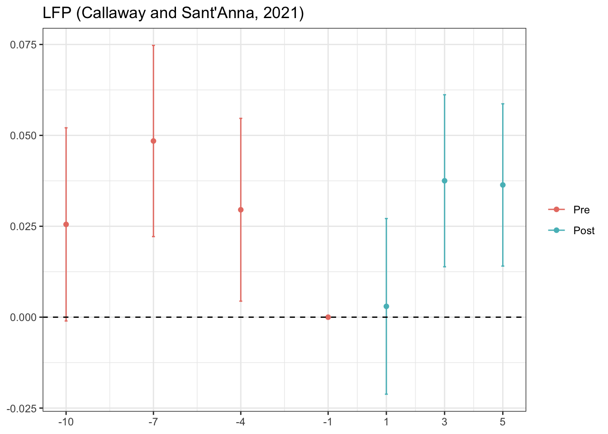
functions$plot_mean(df_extensive, "employment")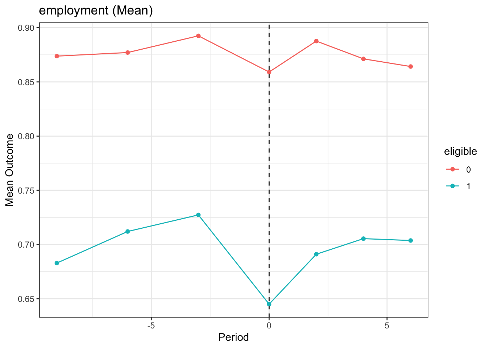
# run_feols(df_extensive, "employment", F) |>
# iplot()
# run_feols(df_extensive, "employment", T) |>
# iplot()
m1 <- functions$run_ols(df_extensive, "employment", F)
m2 <- functions$run_ols(df_extensive, "employment", T)
functions$plot_event_study(m1, m2)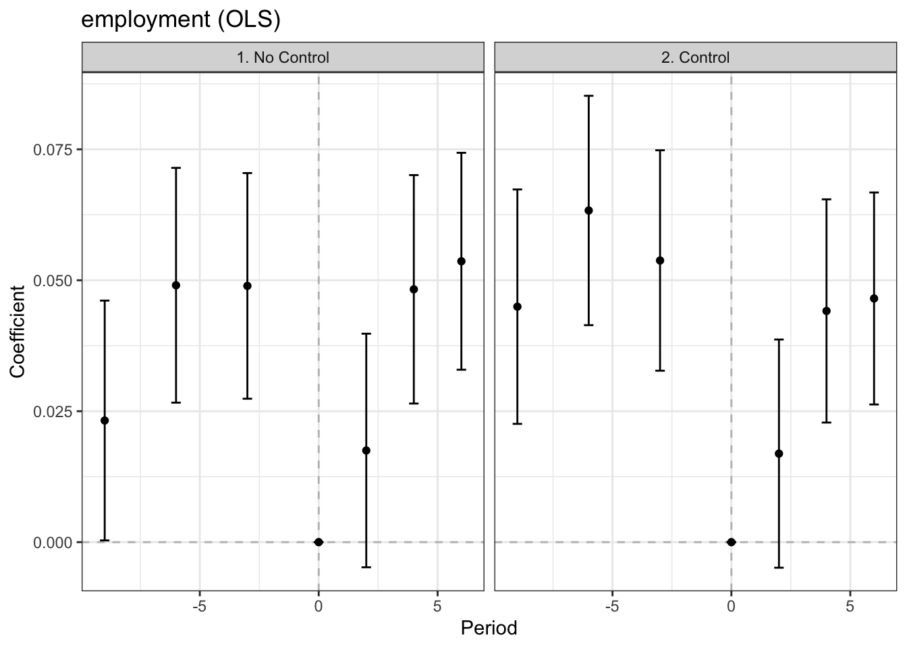
# sensitivity_check(m1, relativeMagnitudes = T) |> print()
# sensitivity_check(m1, relativeMagnitudes = F) |> print()te_employment <- functions$run_all_regressions("employment", df_extensive)[1] "DONE - OLS"Warning in pre_process_drdid(yname = yname, tname = tname, idname = idname, :
Some covariates are missing (NA). We are dropping those observations[1] "DONE - Doubly robust DID"Warning in pre_process_drdid(yname = yname, tname = tname, idname = idname, :
Some covariates are missing (NA). We are dropping those observations[1] "DONE - IPW DID"te_employment# A tibble: 4 × 5
term estimate std.error statistic p.value
<chr> <dbl> <dbl> <dbl> <dbl>
1 Pooled OLS 0.0117 0.00607 1.92 0.0546
2 Pooled OLS with Controls -0.00239 0.00594 -0.402 0.688
3 DR DID 0.00894 0.00715 1.25 0.211
4 IPW DID 0.0133 0.00795 1.68 0.0936cs_employment <- functions$run_cs(
df_extensive,
"employment",
xfm = "~ schooling + civilstatus + urb",
est_method = "dr"
)Warning in pre_process_did(yname = yname, tname = tname, idname = idname, :
dropped 7 rows from original data due to missing datasummary(cs_employment)
Call:
did::att_gt(yname = outcome, tname = "year", gname = "gname",
xformla = stats::as.formula(xfm), data = data, panel = FALSE,
est_method = est_method, base_period = "universal")
Reference: Callaway, Brantly and Pedro H.C. Sant'Anna. "Difference-in-Differences with Multiple Time Periods." Journal of Econometrics, Vol. 225, No. 2, pp. 200-230, 2021. <https://doi.org/10.1016/j.jeconom.2020.12.001>, <https://arxiv.org/abs/1803.09015>
Group-Time Average Treatment Effects:
Group Time ATT(g,t) Std. Error [95% Simult. Conf. Band]
2010 2000 0.0308 0.0146 -0.0086 0.0702
2010 2003 0.0615 0.0134 0.0254 0.0975 *
2010 2006 0.0387 0.0127 0.0046 0.0728 *
2010 2009 0.0000 NA NA NA
2010 2011 0.0238 0.0135 -0.0127 0.0602
2010 2013 0.0475 0.0133 0.0117 0.0832 *
2010 2015 0.0517 0.0130 0.0167 0.0868 *
---
Signif. codes: `*' confidence band does not cover 0
P-value for pre-test of parallel trends assumption: 0.00014
Control Group: Never Treated, Anticipation Periods: 0
Estimation Method: Doubly Robust# aggte(cs_employment, type = "simple")
aggte(cs_employment, type = "dynamic") |>
ggdid() +
ggtitle("Employment (Callaway and Sant'Anna, 2021)") +
theme_bw()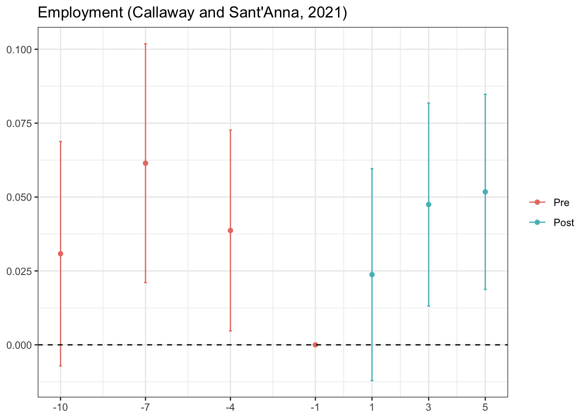
# run_feols(df_extensive, "unemployment", F) |>
# iplot()
# run_feols(df_extensive, "unemployment", T) |>
# iplot()
m1 <- functions$run_ols(df_extensive, "unemployment", F)
m2 <- functions$run_ols(df_extensive, "unemployment", T)
functions$plot_event_study(m1, m2)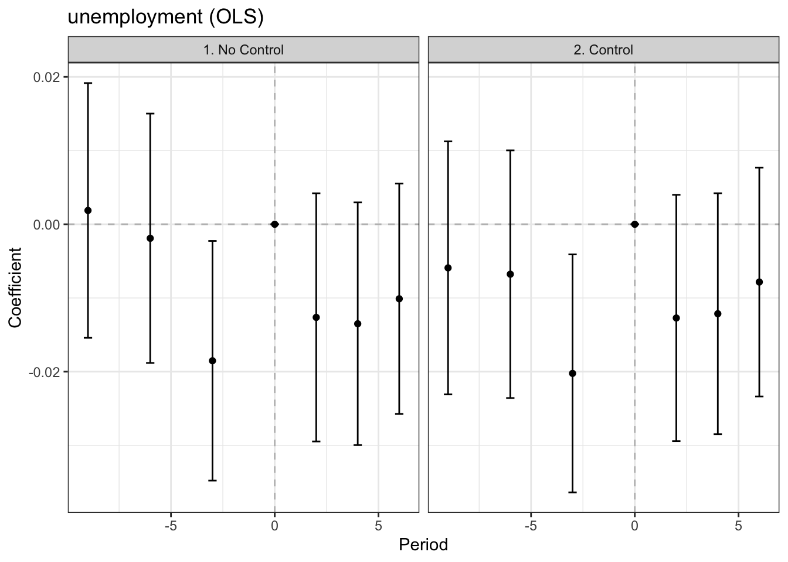
# sensitivity_check(m1, relativeMagnitudes = T) |> print()
# sensitivity_check(m1, relativeMagnitudes = F) |> print()te_unemployment <- functions$run_all_regressions("unemployment", df_extensive)[1] "DONE - OLS"Warning in pre_process_drdid(yname = yname, tname = tname, idname = idname, :
Some covariates are missing (NA). We are dropping those observations[1] "DONE - Doubly robust DID"Warning in pre_process_drdid(yname = yname, tname = tname, idname = idname, :
Some covariates are missing (NA). We are dropping those observations[1] "DONE - IPW DID"te_unemployment# A tibble: 4 × 5
term estimate std.error statistic p.value
<chr> <dbl> <dbl> <dbl> <dbl>
1 Pooled OLS -0.00672 0.00458 -1.47 0.142
2 Pooled OLS with Controls -0.00192 0.00456 -0.422 0.673
3 DR DID -0.00796 0.00559 -1.42 0.154
4 IPW DID -0.00731 0.00579 -1.26 0.207cs_unemployment <- functions$run_cs(
df_extensive,
"unemployment",
xfm = "~ schooling + civilstatus + urb",
est_method = "dr"
)Warning in pre_process_did(yname = yname, tname = tname, idname = idname, :
dropped 7 rows from original data due to missing datasummary(cs_unemployment)
Call:
did::att_gt(yname = outcome, tname = "year", gname = "gname",
xformla = stats::as.formula(xfm), data = data, panel = FALSE,
est_method = est_method, base_period = "universal")
Reference: Callaway, Brantly and Pedro H.C. Sant'Anna. "Difference-in-Differences with Multiple Time Periods." Journal of Econometrics, Vol. 225, No. 2, pp. 200-230, 2021. <https://doi.org/10.1016/j.jeconom.2020.12.001>, <https://arxiv.org/abs/1803.09015>
Group-Time Average Treatment Effects:
Group Time ATT(g,t) Std. Error [95% Simult. Conf. Band]
2010 2000 -0.0053 0.0119 -0.0355 0.0249
2010 2003 -0.0130 0.0114 -0.0420 0.0160
2010 2006 -0.0091 0.0103 -0.0352 0.0170
2010 2009 0.0000 NA NA NA
2010 2011 -0.0208 0.0107 -0.0480 0.0064
2010 2013 -0.0100 0.0104 -0.0364 0.0165
2010 2015 -0.0154 0.0096 -0.0398 0.0090
---
Signif. codes: `*' confidence band does not cover 0
P-value for pre-test of parallel trends assumption: 0.68477
Control Group: Never Treated, Anticipation Periods: 0
Estimation Method: Doubly Robust# aggte(cs_unemployment, type = "simple")
aggte(cs_unemployment, type = "dynamic") |>
ggdid() +
ggtitle("Unemployment (Callaway and Sant'Anna, 2021)") +
theme_bw()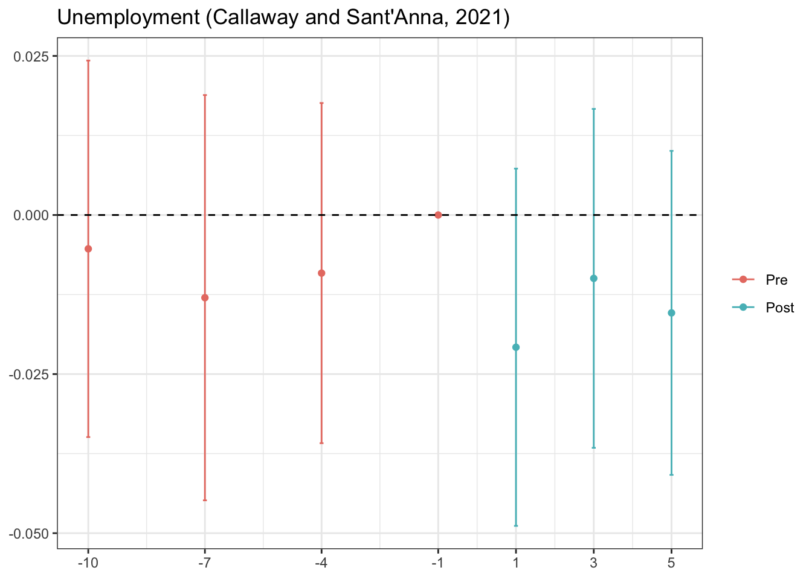
functions$plot_mean(df_extensive, "contract")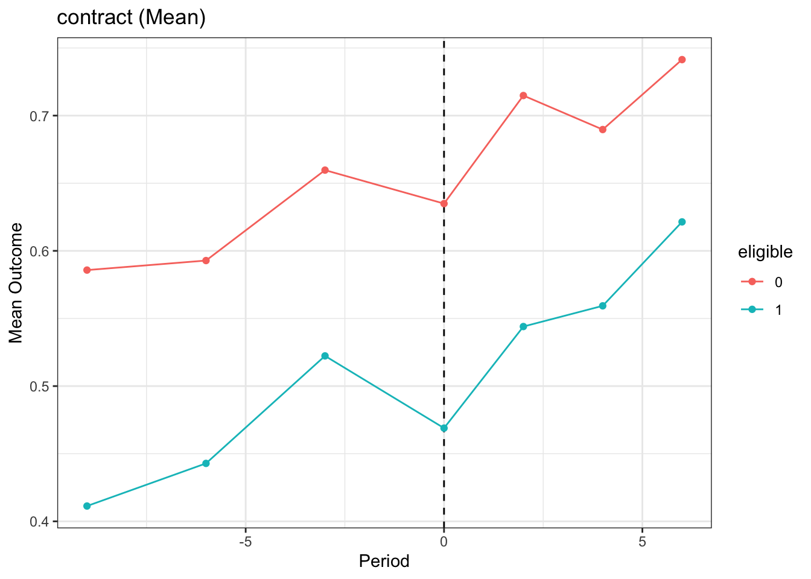
# run_feols(df_extensive, "contract", F) |>
# iplot()
# run_feols(df_extensive, "contract", T) |>
# iplot()
m1 <- functions$run_ols(df_extensive, "contract", F)
m2 <- functions$run_ols(df_extensive, "contract", T)
functions$plot_event_study(m1, m2)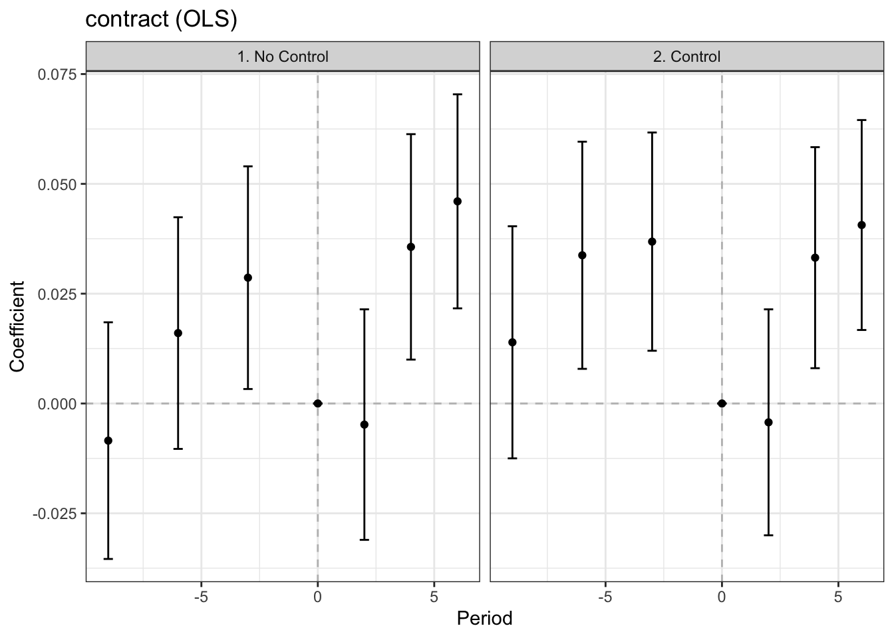
# sensitivity_check(m1, relativeMagnitudes = T) |> print()
# sensitivity_check(m1, relativeMagnitudes = F) |> print()te_contract <- functions$run_all_regressions("contract", df_extensive)[1] "DONE - OLS"Warning in pre_process_drdid(yname = yname, tname = tname, idname = idname, :
Some covariates are missing (NA). We are dropping those observations[1] "DONE - Doubly robust DID"Warning in pre_process_drdid(yname = yname, tname = tname, idname = idname, :
Some covariates are missing (NA). We are dropping those observations[1] "DONE - IPW DID"te_contract# A tibble: 4 × 5
term estimate std.error statistic p.value
<chr> <dbl> <dbl> <dbl> <dbl>
1 Pooled OLS 0.0128 0.00715 1.80 0.0725
2 Pooled OLS with Controls -0.00133 0.00703 -0.190 0.850
3 DR DID 0.00820 0.00861 0.952 0.341
4 IPW DID 0.0110 0.00920 1.19 0.234 cs_contract <- functions$run_cs(
df_extensive,
"contract",
xfm = "~ schooling + civilstatus + urb",
est_method = "dr"
)Warning in pre_process_did(yname = yname, tname = tname, idname = idname, :
dropped 7 rows from original data due to missing datasummary(cs_contract)
Call:
did::att_gt(yname = outcome, tname = "year", gname = "gname",
xformla = stats::as.formula(xfm), data = data, panel = FALSE,
est_method = est_method, base_period = "universal")
Reference: Callaway, Brantly and Pedro H.C. Sant'Anna. "Difference-in-Differences with Multiple Time Periods." Journal of Econometrics, Vol. 225, No. 2, pp. 200-230, 2021. <https://doi.org/10.1016/j.jeconom.2020.12.001>, <https://arxiv.org/abs/1803.09015>
Group-Time Average Treatment Effects:
Group Time ATT(g,t) Std. Error [95% Simult. Conf. Band]
2010 2000 0.0112 0.0181 -0.0355 0.0579
2010 2003 0.0330 0.0160 -0.0083 0.0743
2010 2006 0.0278 0.0159 -0.0134 0.0689
2010 2009 0.0000 NA NA NA
2010 2011 0.0041 0.0154 -0.0357 0.0440
2010 2013 0.0434 0.0152 0.0040 0.0828 *
2010 2015 0.0410 0.0144 0.0037 0.0782 *
---
Signif. codes: `*' confidence band does not cover 0
P-value for pre-test of parallel trends assumption: 0.17098
Control Group: Never Treated, Anticipation Periods: 0
Estimation Method: Doubly Robust# aggte(cs_contract, type = "simple")
aggte(cs_contract, type = "dynamic") |>
ggdid() +
ggtitle("Contract (Callaway and Sant'Anna, 2021)") +
theme_bw()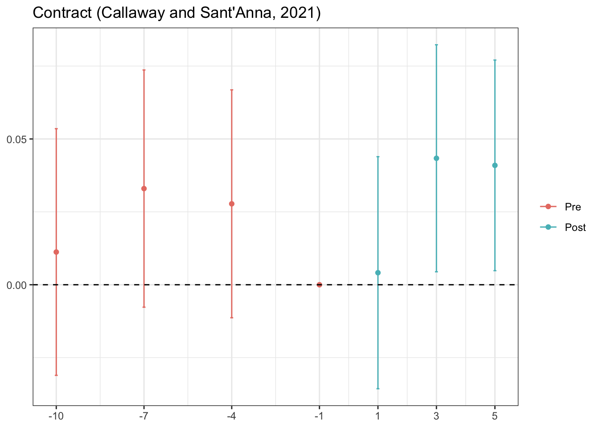